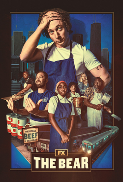

The Bear é uma série de televisão norte-americana criada por Christopher Storer, estreada em 2022. Acompanha Carmy, um jovem chef de alta cozinha que volta a Chicago para gerir a pequena sanduicharia da família depois da morte do irmão.
Com a ajuda de uma equipa muito pouco convencional, Carmy tenta transformar o negócio num restaurante a sério, entre a pressão da cozinha, as dívidas e os problemas familiares.

Vê as personagens e as temporadas na página 2 ou consulta a página da Wikipédia.